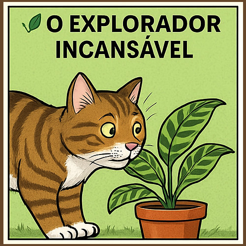
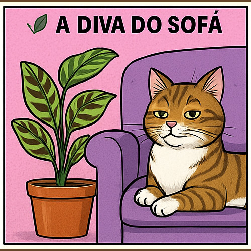
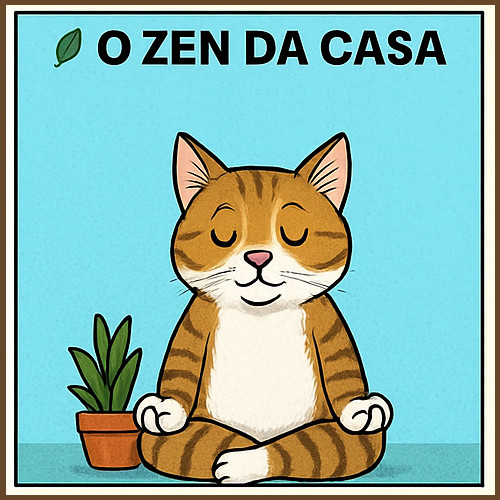
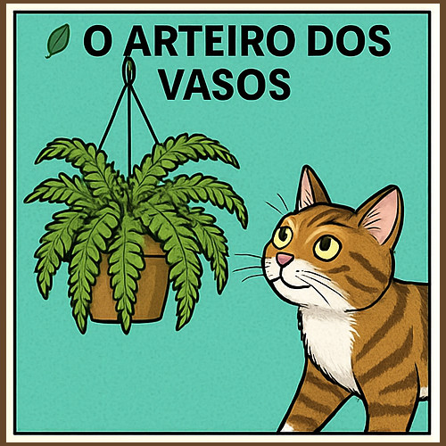
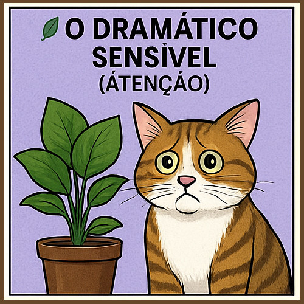

Descubra a planta que combina com seu gato!

Gatos têm personalidade — e isso não é novidade. Mas você já parou para pensar que talvez exista uma planta que combine perfeitamente com o estilo do seu felino?
🌿 O explorador incansável — Calathea lancifolia

Se seu gato vive farejando cada canto, adora novas texturas e parece ter um radar interno para aventuras (especialmente aquelas que envolvem derrubar coisas da prateleira), ele pode se dar muito bem com a Calathea lancifolia. Suas folhas com desenhos únicos chamam atenção, mas são seguras caso role uma mordiscada curiosa. Imagine seu felino investigando cada folha como se fosse um mapa do tesouro...
🌿 A diva do sofá — Maranta leuconeura

Tem um gatinho que passa o dia se exibindo com poses elegantes e preguiçosas, como se estivesse sempre pronto para uma sessão de fotos da 'Vogue Felina'? A Maranta leuconeura é a planta ideal...
🌿 O zen da casa — Sansevieria hahnii

Gatos calmos, que adoram janelas, silêncio e contemplar o além, combinam com a Espadinha (Sansevieria hahnii). Mas atenção: ela é tóxica!...
🌿 O arteiro dos vasos — Samambaia-americana

Seu gato vive cavando vasos como se estivesse escavando um fóssil raro? Melhor subir o nível — literalmente! A Samambaia-americana é linda, segura para gatos e fica suspensa...
🌿 O dramático sensível — Lírio-da-paz (atenção!)

Esse é o gato que mia com lágrimas (metafóricas), exige colo nos momentos menos oportunos e faz cena quando muda o pote de água. Combina com o Lírio-da-paz pela aura dramática — mas cuidado: ele é tóxico!...
💡 Dica final
Estamos preparando um teste divertido para ajudar você a descobrir qual planta é a alma verde do seu gato...
🧪 Faça o teste agora!
Responda abaixo e descubra a planta que combina com a personalidade única do seu gato:
← Voltar para o blog